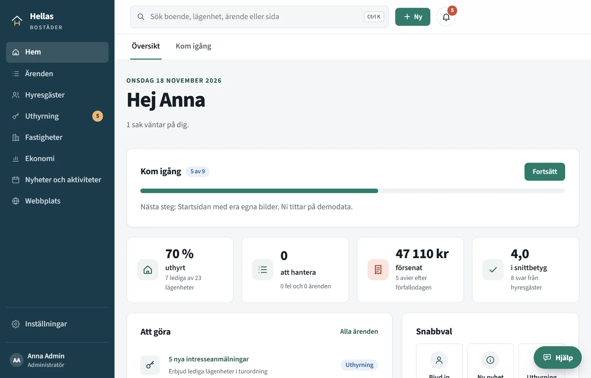

← All projectsPrivate code
02 / 06
Resident Portal
A portal for landlords and housing cooperatives.
Happy to show on request
02 / 06
A portal for landlords and housing cooperatives.
Happy to show on request
Landlords and housing cooperatives need one place where residents can handle their errands and staff can keep track of them.
The portal is built so that every customer gets a completely separate environment. No customer shares a database or sign-in with anyone else.

